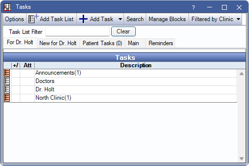
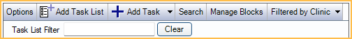
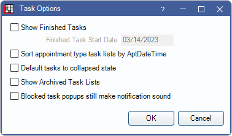

Tasks Area
Task Lists and Tasks are managed in the Tasks Area, and can be used for office communications, reminders, patient lists, daily, weekly, or monthly check off lists, etc.
In the Manage Module, click Tasks.
Alternatively:
- The Task Area may also be docked to the bottom or side of the main Open Dental window.
- Click the Tasks dropdown in the main toolbar and click For User or Reminders to launch the Task window in the specified tab.
A Task List can include nested Task Lists or Tasks.
Related links
Setup
- Set permissions for editing and deleting Tasks in Security.
- Tasks Preferences
- Task List and Inbox
 See our video playlist: Task Lists.
See our video playlist: Task Lists.
When the Tasks area is docked, you can resize the area by dragging the splitter (the horizontal bar between the Tasks Area and the rest of the screen). To change docking options, right-click on the splitter, or click Setup, Task.
Task Toolbar
Options: Set Task List options.

- Show Finished Tasks: If checked, view Tasks that have been marked Done in the selected Task List.
- Finished Task Start Date: View Tasks marked Done on or after this date. Enter any date in this field.
- Sort appointment type Task Lists by AptDateTime: If checked, Task Lists that have Object Type set as Appointment will be grouped by scheduled and unscheduled appointments, then sorted by appointment date and time, rather than the date and time the Task was created.
- Default Tasks to collapsed state: If checked, Tasks that meet the criteria will be collapsed by default.
- Show Archived Task Lists: If checked, Task Lists that have been marked Archived will be shown.
- Blocked Task popups still make notification sound: If checked, Task sound is included on blocked tasks.
Add Task List: Create a new Task List. Must be selected in the Main tab. See Task List and Inbox.
Add Task: Create a new Task. Click the dropdown to add a reminder Task. See Add Task.
Search: Search for specific Tasks. See Task Search.
Manage Blocks: Block Task popups for specific Task Lists. Select the lists to block, then click OK. Tasks in selected lists will not pop up, but will still show in the New for User tab until read.

Global Filter: Only visible when Global Filter for Task Lists is enabled in Task Preferences. Allows a user to manually filter a Task List. Text on button will change depending on the filter selected.
- Default: Use the default filtering option selected in Task Preferences. Text on button will be dependent on the default option.
- None: Do not filter out Tasks in this list. Text on button is Unfiltered.
- Clinic: Filter the list by clinic. Highlight one or more clinics, then click OK. Text on button is Filtered by Clinic.
- Region: Filter the list by region. Highlight one or more regions, then click OK. Text on button is Filtered by Region.
Task List Filter: Type to filter the available Task Lists in the selected tab. Click Clear to view all Task Lists in the selected tab. Not functional in New For or Patient Task tabs.
Refresh: Button will only appear for Enterprise users with the Tasks, 'Main' and 'Reminders' tabs require manual refresh. Click to refresh and get new Tasks and Task Lists in the Main or Reminders tab. Upon logging in, Enterprise users must click Refresh to see any Tasks Lists in the Main or Reminders tab..
Tabs
Click on a tab and its Tasks or Task Lists will show.
For User: Task Lists that the current user is subscribed to.
New for User: See unread Tasks for the currently logged-on user's subscribed Task Lists. Click read to remove a task from the list. Users may see Tasks from Task Lists they are no longer subscribed to if the Task was unread at the time of unsubscribing.
Open Tasks: Keep track of Tasks that have an object type of Patient and are From the currently logged-on user. This tab is only visible if Show open Tasks for user is checked in Tasks Preferences.
Patient Tasks: Keep track of Tasks that have an object type of Patient and a patient attached. When the attached patient is selected, their Tasks will show in this list.
Main: All Task Lists and inboxes. Excludes archived Task Lists by default.
Reminders: All Task Lists and inboxes (excludes archived lists by default). Click a list to view all Task reminders regardless of due status. Reminders replace Repeating Tasks. See Task Reminder.
Repeating (setup) / By Date / By Week / By Month: Only shows when Show legacy repeating tasks is enabled in Task Setup.
Task Lists

From a corresponding tab, click on a Task list to see the Tasks within.
Right-click options:
- Edit Properties: Edit Task List options.
- Set Priority: Change the Task Priority. A Task Note is added with the user that changed the Task and the new Task Priority (only applies to non-inbox Task Lists).
- Cut: Cut Task List to move into another list.
- Paste: Paste a cut Task List into another location.
- Delete: Delete this Task List.
- Subscribe: Subscribe to the Task List.
- Unsubscribe: Unsubscribe to the Task List.
- Archive: Marks list as archived, allows it to be hidden by default.Note:
- Archiving will archive any child lists.
- Archiving will unsubscribe any users subscribed to the list.
- Archived Task Lists disassociate any User Inboxes.
- To show Archived Task Lists, enable Show Archived Task Lists in Task Options above.
- When Archived Task Lists are showing, a right-click option to Unarchive will be available. This does not restore Object of Date Type, or User Inbox associations.
- Open Reminder Tasks will have their reminder settings removed.
Tasks
Click on a Task List or click the New for User or Patient Tasks tab to see Tasks.
By default, only open Tasks are shown. Click Options to include closed Tasks. Tasks lists that have new Tasks are flagged with an orange checkbox and the number of new Tasks appears in parentheses. A Task List can include nested Task Lists or Tasks.

Double-click a Task to open it. See Task Window.
From the Tasks window or Tasks dock, right-click a Task to see the following options:
- Done (affects all users): Mark a Task as done.
- Edit Properties: Open Task to make edits.
- Set Priority: Change Task Priority. Add Task Priorities in Definitions: Task Priorities
- Cut: Cut Task to move to another list.
- Copy: Make a copy of the Task to move to another list.
- Paste: Paste a cut or copied Task into a list.
- Delete: Delete this Task.
- Send to Me: Send selected Task to the current logged-on user's inbox.
- Send to Me & Go to: Send Task to the current logged-on user's inbox, select the attached patient, and add a note to the Task.
- Go To: Go to the patient or appointment associated with the Task.
- Navigate to Attachment: Opens the selected Task attachment.
- Mark as Read: Mark Task as read. Removes task from the New For tab
Task text that is more than 250 characters, has two or more Task Notes, or one Task Note more than 250 characters can be expanded or collapsed. The + or - in the +/-column indicates in current state. Click the +/-column header to toggle all Tasks between expand or collapse.
- indicates a Task that is expanded. Click - to collapse text.
+indicates a Task that is collapsed. Click + to expand.
Set the default state in Task Preferences.
Task Popout Count
The Task popout window displays the number of new (i.e., unread) Tasks in the selected Task List. Hover over the Open Dental icon on the taskbar to view. Task count only shows when the Tasks window is open and a Task List or tab is selected.